事前に取得した LPI ID と Pearson VUE のアカウントを連携させたうえで、試験の申し込みを行います。
LPI ID をまだお持ちでない方は、先に以下の手順で取得してください。 LPI ID の取得手順を見る ↗
LPI ID と Pearson VUE を連携する
以下のリンクから Pearson VUE のアカウント作成ページにアクセスしてください。
Pearson VUE アカウント作成ページ（wsr.pearsonvue.com）を開く ↗「Pearson VUE プライバシーポリシー」への同意が求められるので、各項目のチェックボックスにチェックを入れ、右下の「同意します」をクリックしてください。
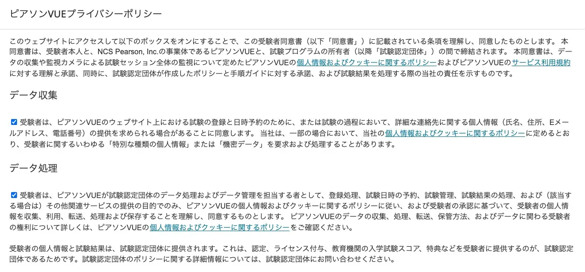
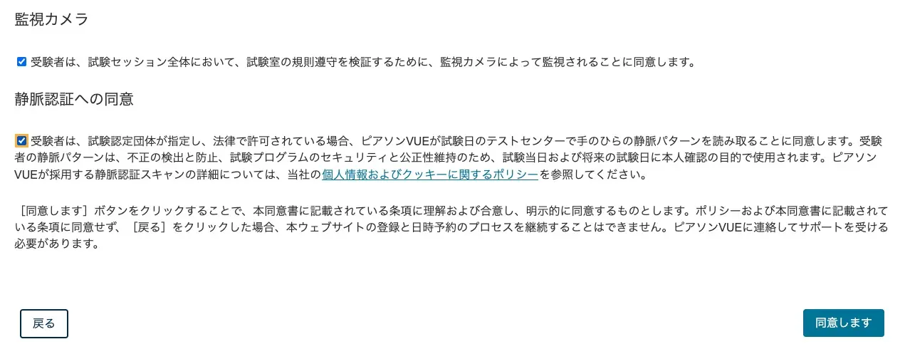
続けて Pearson VUE のアカウント作成を行います。LPI ID を入力する項目に、事前に取得した LPI ID を入力し、そのほかの項目も入力して順番に進めていけば連携は完了です。
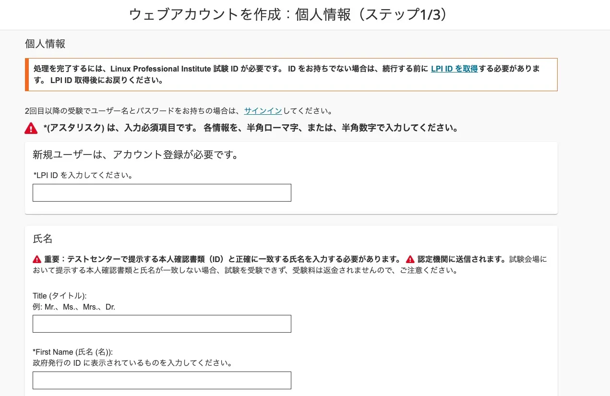
Pearson VUE で試験を申し込む
以下のリンクから Pearson VUE（LPI 試験）のページにアクセスし、右側の「サインイン」から、先ほど作成した Pearson VUE のアカウントでログインしてください。
Pearson VUE（LPI 試験）ページを開く ↗ダッシュボード画面が表示されたら、「試験の表示」をクリックして LPIC 試験の予約に進みます。
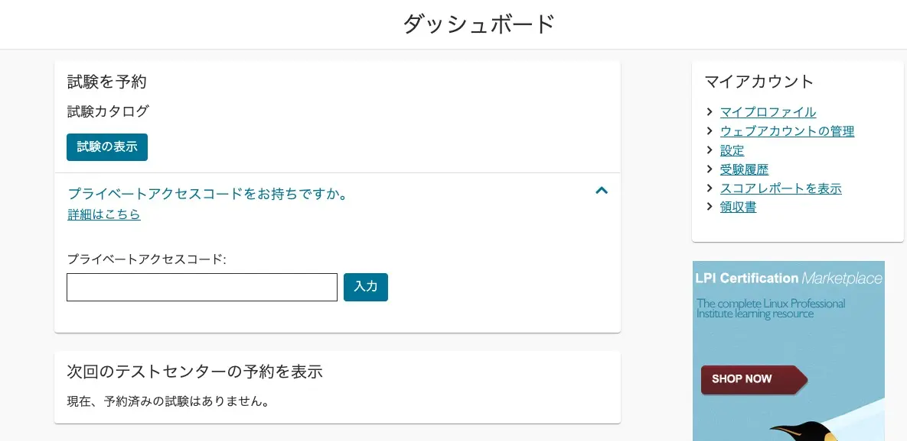
受験対象の LPIC 試験を選択します。試験対象を間違えないよう気をつけてください。
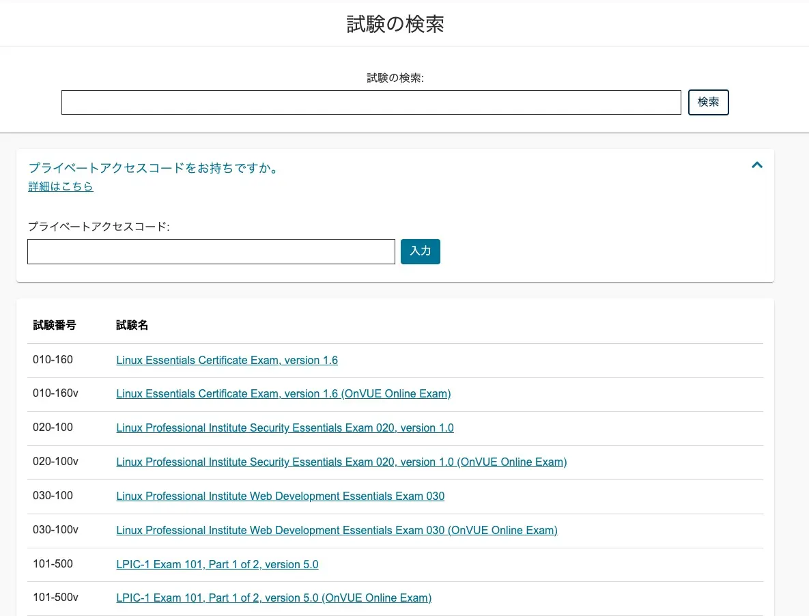
LPIC 試験の言語を選択して、「次へ」をクリックします。
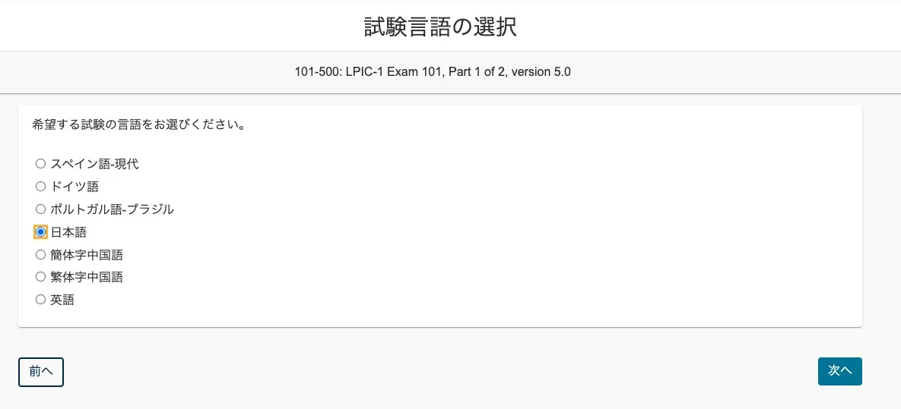
LPIC 試験のポリシーに同意して、次に進みます。
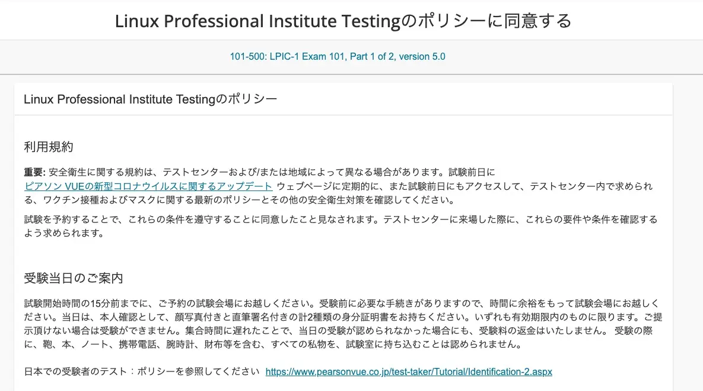
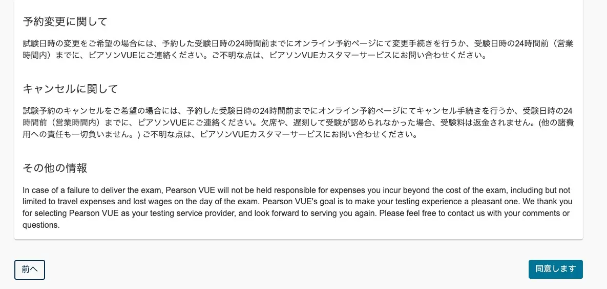
受験会場となるテストセンターを選択します。
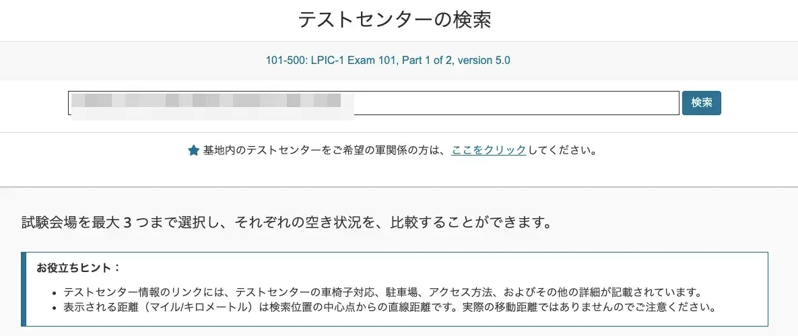
希望したテストセンターで空いている日程を検索します。
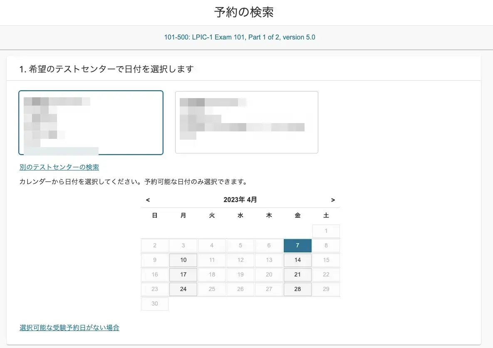
試験の開始時間を決めます。12時間表示と24時間表示の切り替えが可能です。
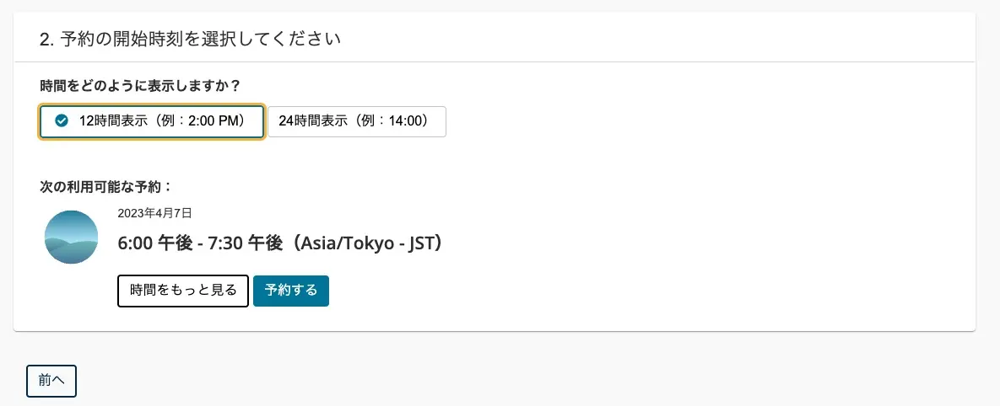
LPIC 試験の開始時間を選択します。
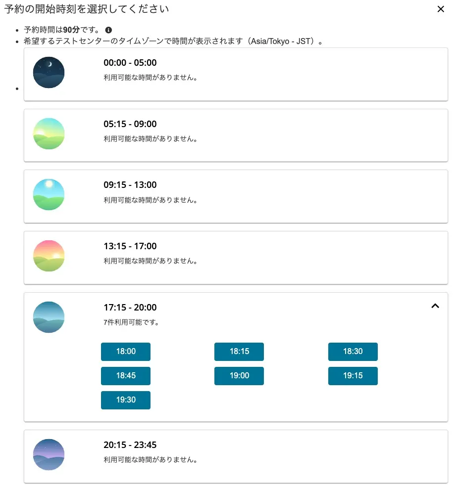
確認画面が表示されたら、試験対象・試験日・場所が合っているかを確認してください。
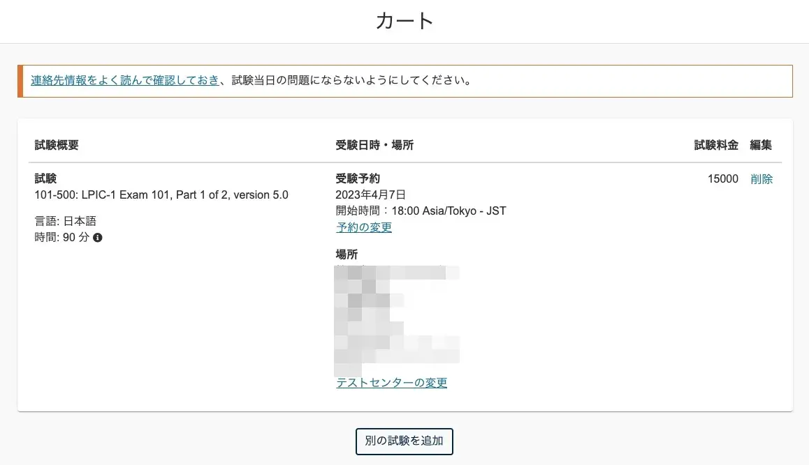
支払情報を入力します。楽天や Ping-t で受験バウチャーチケットを購入済みの方や、プロモーションコードをお持ちの方は該当欄に入力してください。
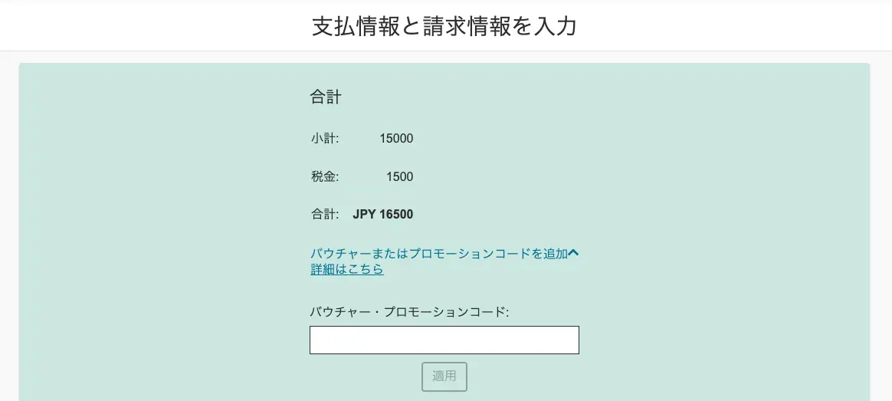
クレジットカードでの支払い方法を選択して進めます。最終的な試験申し込み画面が表示されるので、内容を入念に再確認してください。あとは画面の案内に沿って進めれば申し込みは完了です。
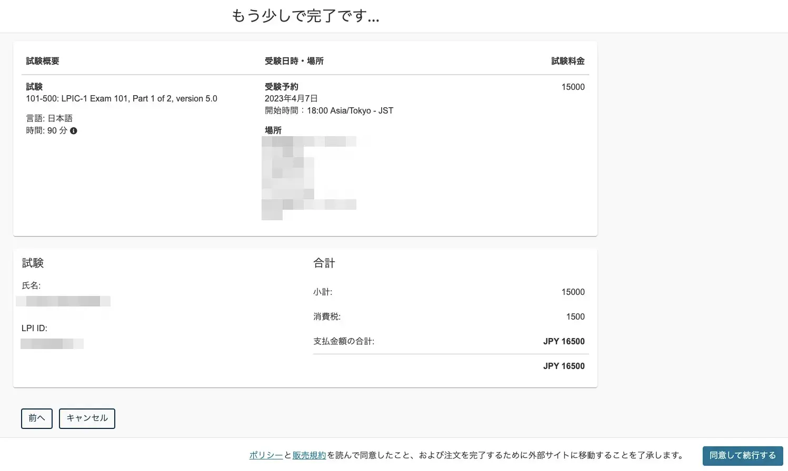
予約完了メールが届きますので、試験当日まで大切に保管してください。